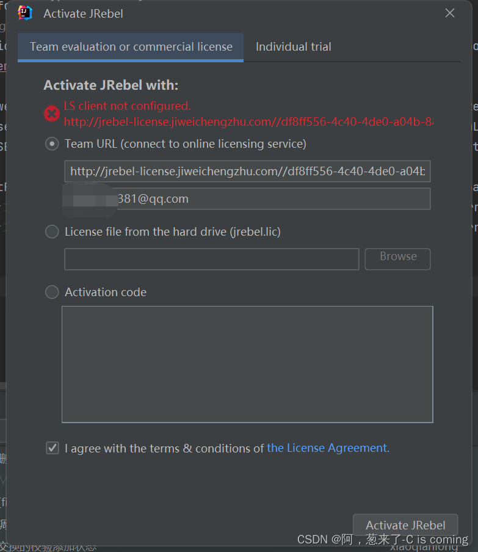
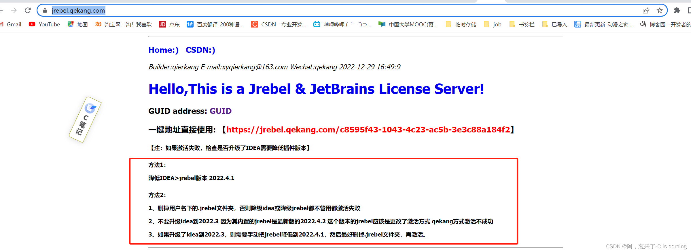
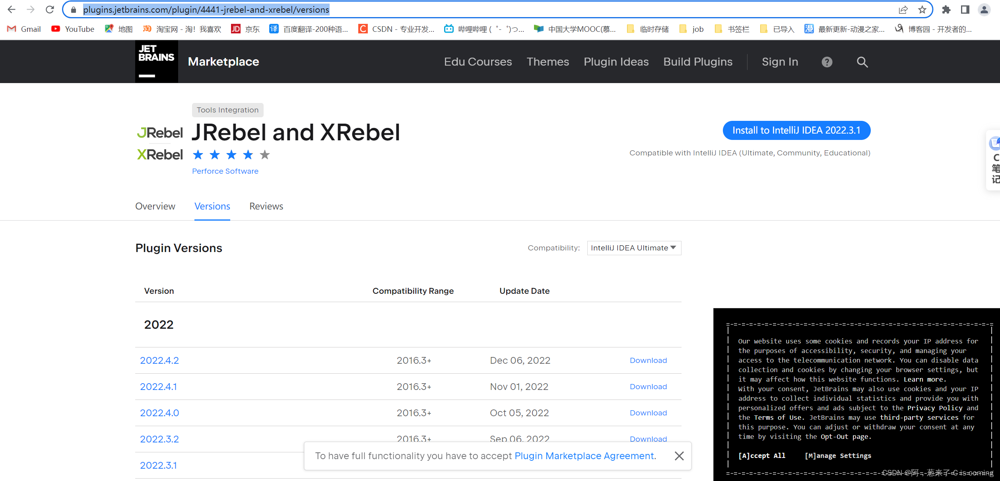
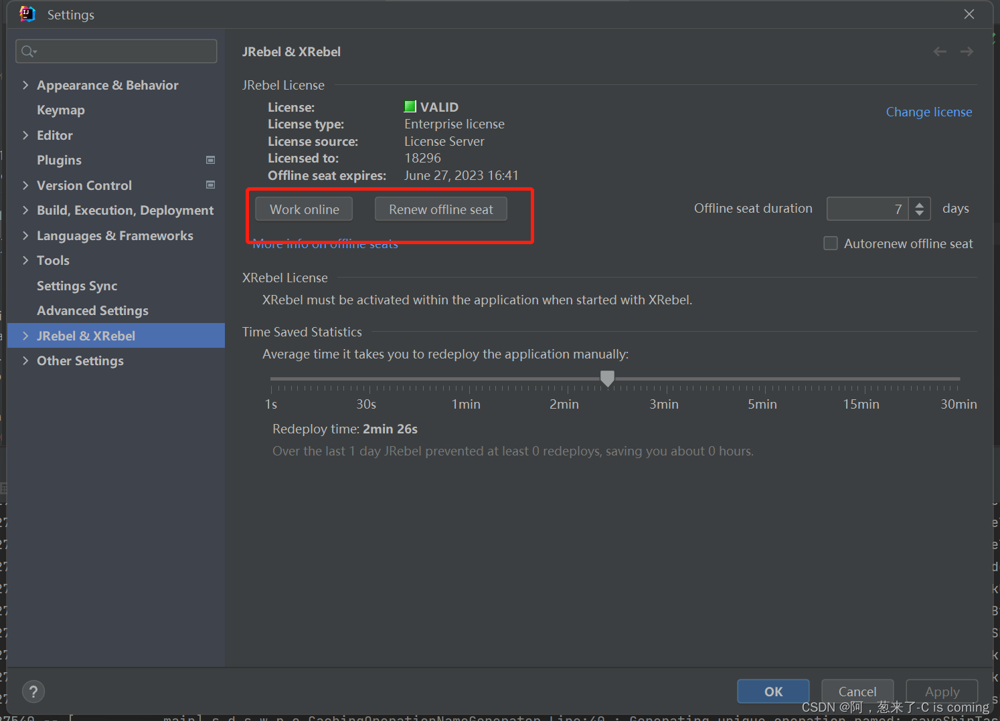

【jrebel and xrebel问题记录】激活时出现LS client not configued
本文最后更新于：2023年7月10日 上午
问题描述
笔者在重装另一台电脑的时候又遇到了这个安装jrebel and xrebel进行激活的问题 但是我在网上找了很多的办法（其实都是相同的办法，只是在尝试别人不同的用于激活的服务器）
我找到的网上其他人分享出来的几个服务器地址：
https://jrebel.qekang.com/{GUID}
http://jrebel-license.jiweichengzhu.com/{GUID}
(你可以直接去掉后面的{GUID}直接访问这两个地址，能访问就说明这两个地址还在工作，还没有挂掉，且直接访问的话，有相应的使用说明，一开始我还以为是这两个服务器挂了导致激活不成功的，后面发现这两个地址能访问)
然后再配合这个地址（https://www.guidgen.com/）生成的guid，和上面的服务器地址拼接起来(替换上面链接里的{GUID})，将拼接起来的内容放入那个激活界面然后任意输入一个邮箱地址就可用于激活
但是点击激活都是下面这样：

所使用的环境和版本
本次使用的是idea2022.3.1 （我升级到最新版的idea了）
然后通过这个idea下载到的Jrebel and Xrebel的版本也是最新版的2022.4.2
解决过程
一开始我是怀疑这个用于激活的地址挂掉了的，但后面发现这两个地址都能够正常访问，说明就不是激活地址的问题，后面在https://jrebel.qekang.com/的激活介绍里面看到了激活失败的可能的问题原因：

刚好发现我就属于他描述的其中一种情况，然后我卸载了当前的2022.4.2版本的jrebel，删除了c盘用户下面的.jrebel文件，然后去官网下载了2022.4.1版本的jrebel解压到idea安装目录里面的pulgins的文件夹里，再重启idea后进行激活，发现激活成功
还是感谢那两位大佬共享出来的服务器！是我浅薄无知了，我一开始还怀疑网上共享出来的所有 的用于激活的链接都挂了呢
手动下载jrebel
1、先在idea中卸载之前安装的jrebel，保证idea中没有安装jrebel，然后关闭idea，在c盘的用户目录下去删除相关的.jrebel文件，如果你卸载了jrebel的话应该只会有几个文件在你的用户目录下，比如我的用户目录是这个“C:\Users\18296”
2、官网去找到过去版本的jrebel，地址：https://plugins.jetbrains.com/plugin/4441-jrebel-and-xrebel/versions

下载一个过去版本的jrebel，下载下来是一个压缩包，解压到你的一个地方先保存下来
3、然后将解压出来的这个压缩包放到你的idea的安装目录的pulgin的目录里，比如我的安装目录的插件文件夹是这个：D:\qc_code\IntelliJ IDEA 2022.3.1\plugins
4、如果你的idea还是打开状态的话，建议重启一下idea，然后在你的idea的file–>settings打开后就会看到Jrebel and Xrebel，找到它之后再按照网上提供的方法（也就是文章一开始的问题描述的那样，将对应的链接放入激活界面的方式进行激活）进行激活
5、激活成功后
最后建议把这个改为离线工作模式
